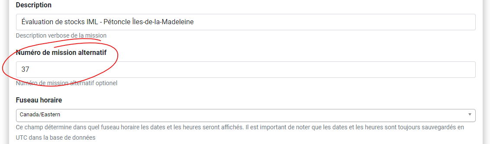
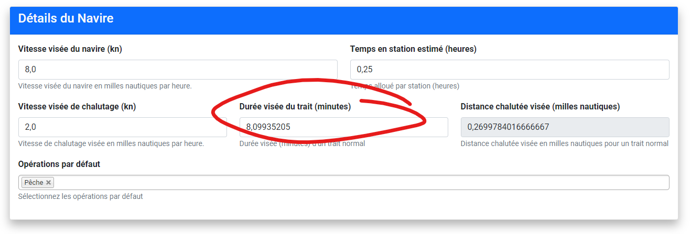
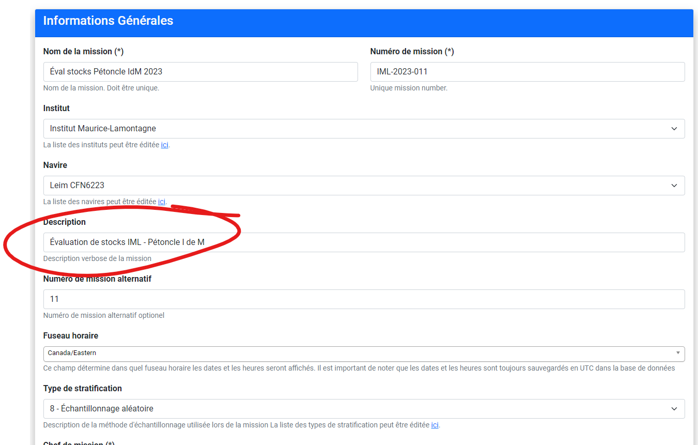
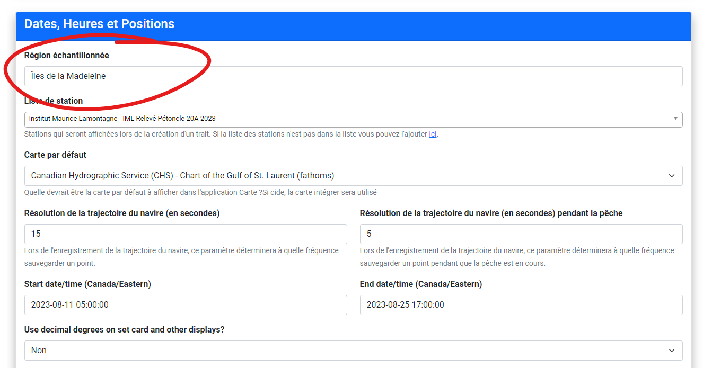

Contraintes pour Pétoncle#
Numéro de mission alternatif et NO_RELEVE#
Un champ critique des la BD PSE, NO_RELEVE (numéro du relevé) doit être obtenu par un DBA de la DAISS. Ce champ était présent dans le fichier Access fourni pas la DAISS.
Une fois que le numéro de relevé à été désigné pour la mission, il doit être saisie dan andes via le champ de mission “Numéro de mission alternatif”, voir figure.

Distance de trait visée par la mission#

Dans l’ancien outil de saisie, il faut saisir des métadonnées de mission tel que i) la vitesse visée (\(v\)), ii) la durée visée (\(t\)) et ii) la distance visée (\(d\)) comme trois variables indépendantes. Étant donnée la relation \(v=d t\), il ne peut q’avoir deux variables indépendents (il est donc possible sur l’ancien outil de saisir des valeurs invalides).
La vitesse, ayant un impacte sur la performance de drague, mérite d’etre traité comme variable indépendente. Il reste donc a faire le choix arbitraire entre un temps visée ou une distance visée, selon la discrétion du chef de mission.
Andes impose comme métadonnées de mission, que la saisie de la vitesse visée, ainsi que la durée visée soit traité comme variables indépendentes, et donc distance est dérivées de ces derniers, voir figure.
Dans les situations ou la distance devait être traité somme variable indépendent au lieu de la vitesse, il était jugé plus simple de seulement pré-calculé et saisir la durée requise pour donner la distance voulu. Cette approche étant la plus simple ne demande aucune modifications d’Andes. Un durée de 8,09935205 minutes à un vitesse de 2,0 noeuds est de 500 mètres (soit 0.269978 miles nautiques).
N.B. Ces distances sont utilisé comme métadonnées de mission. Il est possible que la distances visées de traits différent entre les stations. Ceux-ci devront être saisie autrement.
Déscription de mission#

Doit corréspondre à une entrée de la table PROJET_MOLLUSQUE ayant une valeur éxistante pour la colonne DESC_SOURCE_INFO_F
Pour les mission pétoncle, un de ces choix:
Évaluation de stocks IML - Pétoncle I de MÉvaluation de stocks IML - Pétoncle MinganiePour les missions buccin:Relevé buccin Haute Côte-Nord
Région échantilonnée -> Secteur du relevé#

Doit corréspondre à une entrée de la table TRAIT_MOLLUSQUE ayant une valeur éxistante pour la colonne DESC_SECTEUR_RELEVE_F
Pour les mission pétoncle, un de ces choix:
Îles-de-la-MadeleineCôte-NordPour les missions buccin:Haute Côte-Nord
Pour les missions buccin:
Haute Côte-Nord
ATTENTION!#
Certaine tables de reference n’ont pas les memes valeurs entre la BD de MS Access la BD Peche_Sentinelle (IMLP). En cas de doute la BD PecheSentinelle devrait etre considéreé comme étant la bonne. Cetaines Tables/colonnes ne sont pas présente dans la BD Access.
PROJET_MOLLUSQUE#
Table: PROJET_MOLLUSQUE
Inconsistance dans le nom de colonne
IMLP:
REM_PROJET_MOLLACCESS:
REM_PROJ_MOLL
TRAIT_MOLLUSQUE#
les colonnes:
DATE_HRE_DEB_TRAITDATE_HRE_FIN_TRAITSALINITE_FONDSALINITE_FOND_PCOD_TYP_ECH_TRAIT
Ne sont pas dans la table TRAIT_MOLLUSQUE de la BD Access, mais est presente dans sur IMLP.
Étant donné que ces valeurs peuvent etre null (et le sont pour la plupart des relevées récents), nous allons simplement insérer une valeur null.
(relevé 32 a trois traits avec une valeur non null !?)
TYPE_ECHANT_TRAIT#
La table IMLP TYPE_ECHANT_TRAIT n’éxiste pas dans la BD ACccess:

TYPE_HEURE#
IMLP
0 -> Normale Standard
1 -> Avancée Daylight saving
2 -> GMT GMT
Acces
0 -> Normale Standard
1 -> Avancée Daylight saving
Donc meme si Andes utilise l’heure GMT (selon les bonnes pratiques) l’option n’éxiste pas dans Access, donc les dates/heures sont converti en heure normal standard de l’est (EST).
SECTEUR_RELEVE_MOLL#
Certaine tables de reference n’ont pas les memes valeurs entre la BD de MS Access la BD Peche_Sentinelle (IMLP). En cas de doute la BD PecheSentinelle devrait etre considéreé comme étant la bonne.
Table: SECTEUR_RELEVE_MOLL
Colonne: DESC_SECTEUR_RELEVE_F
IMLP: Îles-de-la-Madeleine
ACCESS: Îles de la Madeleine
IMLP:
COD_SECTEUR_RELEVE |
DESC_SECTEUR_RELEVE_F |
SECTEUR_RELEVE |
|---|---|---|
1 |
Côte-Nord |
C |
2 |
Estuaire |
E |
3 |
Gaspésie |
G |
4 |
Îles-de-la-Madeleine |
I |
5 |
Québec |
Q |
6 |
Basse Côte-Nord |
B |
7 |
Haute Côte-Nord |
H |
8 |
Moyenne Côte-Nord |
M |
9 |
Anticosti |
A |
Le problème est évité en suivant un approche plus robuste en fesant le lien via la valeur dans la colonne SECTEUR_RELEVE.
Cette valeur est extrait de la premier lettre (apres un nettoyage d’accents et mont en majuscules) du champ Andes Région échantilonnée.
Nous pouvons donc choisir de saisie la région Îles-de-la-Madeleine ou Îles de la Madeleine sans problèmes car dans les deux cas, le charactère I sera utilisé pour SECTEUR_RELEVE afin d’obtenr le code 4 requis. Par contre, il faut s’assurer que tout nouvelles entrées soit compatible avec cette approche.
SOURCE_INFO#
Certaine tables de reference n’ont pas les memes valeurs entre la BD de MS Access la BD Peche_Sentinelle (IMLP). En cas de doute la BD PecheSentinelle devrait etre considéreé comme étant la bonne.
IMLP: Évaluation de stocks IML - Pétoncle Îles-de-la-Madeleine
MSACCESS: Évaluation de stocks IML - Pétoncle I de M
IMLP:
COD_SOURCE_INFO |
COD_CLASSE_PROJET |
DESC_SOURCE_INFO_F |
DESC_SOURCE_INFO_A |
|---|---|---|---|
18 |
7 |
Évaluation de stocks IML - Pétoncle Minganie |
MLI Stocks’ assessment - Scallop Minganie |
19 |
7 |
Évaluation de stocks IML - Pétoncle Îles-de-la-Madeleine |
MLI Stocks’ assessment - Scallop Magdellan Islands |
22 |
7 |
Évaluation de stocks IML - Buccin Haute-Côte-Nord |
MLI Stocks’ assessment - Whelk High North Shore |
23 |
9 |
Évaluation de stocks IML - Homard |
MLI Stocks’ assessment - Lobster |
25 |
7 |
Évaluation de stocks IML - Buccin Îles-de-la-Madeleine |
MLI Stocks’ assessment - Whelk Magdellan Islands |
26 |
7 |
Évaluation de stocks IML - Mactre de Stimpson |
MLI Stocks’ assessment - Stimpson’s Surf Clam |
28 |
7 |
Évaluation de stocks IML - Concombre de mer Gaspésie |
MLI Stocks’ assessment - Sea Cucomber Gaspésie |
29 |
7 |
Évaluation de stocks IML - Concombre de mer Minganie |
MLI Stocks’ assessment - Sea Cucomber Minganie |
30 |
1 |
Recherche écosystémique - Communautés benthiques |
Ecosystemic research - Benthic communites |
32 |
7 |
Projets de recherche - Mollusques |
Research projects - Mollusks |
Il pourait etre envisageable de faire comme avec DESC_SERIE_HIST_F
DESC_SERIE_HIST_F = f"Indice d'abondance zone {self.zone} - {self.espece}"
DESC_SOURCE_INFO_F = f"Évaluation de stocks IML {self.zone} - {self.espece}"
ENGIN_MOLLUSQUE#
Certaine tables de reference n’ont pas les memes valeurs entre la BD de MS Access la BD Peche_Sentinelle (IMLP). En cas de doute la BD PecheSentinelle devrait etre considéreé comme étant la bonne.
La colonne REM_ENGIN_MOLL dans la table ENGIN_MOLLUSQUE existe sur IMLP, mais n’est pas présente sur Access.
TYPE_PANIER#
Certaine tables de reference n’ont pas les memes valeurs entre la BD de MS Access la BD Peche_Sentinelle (IMLP). En cas de doute la BD PecheSentinelle devrait etre considéreé comme étant la bonne.
IMLP:
COD_TYPE_PANIER |
DESC_TYPE_PANIER |
|---|---|
0 |
Pas de panier dans l’engin |
1 |
Panier standard |
2 |
Panier doublé |
ACCESS:
COD_TYPE_PANIER |
DESC_TYPE_PANIER |
|---|---|
1 |
Panier standard |
2 |
Panier doublé |
3 |
Aucun |
Il faudrait chercher (et valider) l’existance de type 0 et 3 dans ACCESS et IMLP (respectivement).
CAPTURE_MOLLUSQUE#
Certaine tables de reference n’ont pas les memes valeurs entre la BD de MS Access la BD Peche_Sentinelle (IMLP). En cas de doute la BD PecheSentinelle devrait etre considéreé comme étant la bonne.
La colonne REM_CATURE_MOLL dans la table ENGINCAPTURE_MOLLUSQUE_MOLLUSQUE existe sur IMLP, mais n’est pas présente sur Access.
Résumeé de contraintes où les valeurs sur Andes doivent correspondre avec Oracle#
Évaluation de stocks IML - Pétoncle I de M
Andes |
PSentinelle |
exemple |
notes |
|---|---|---|---|
|
|
|
texte verbatim |
|
|
|
Permiere lettre seulement (devient |
|
|
|
Parti numérique extrait (devient |
|
|
|
map manuel, (devient |